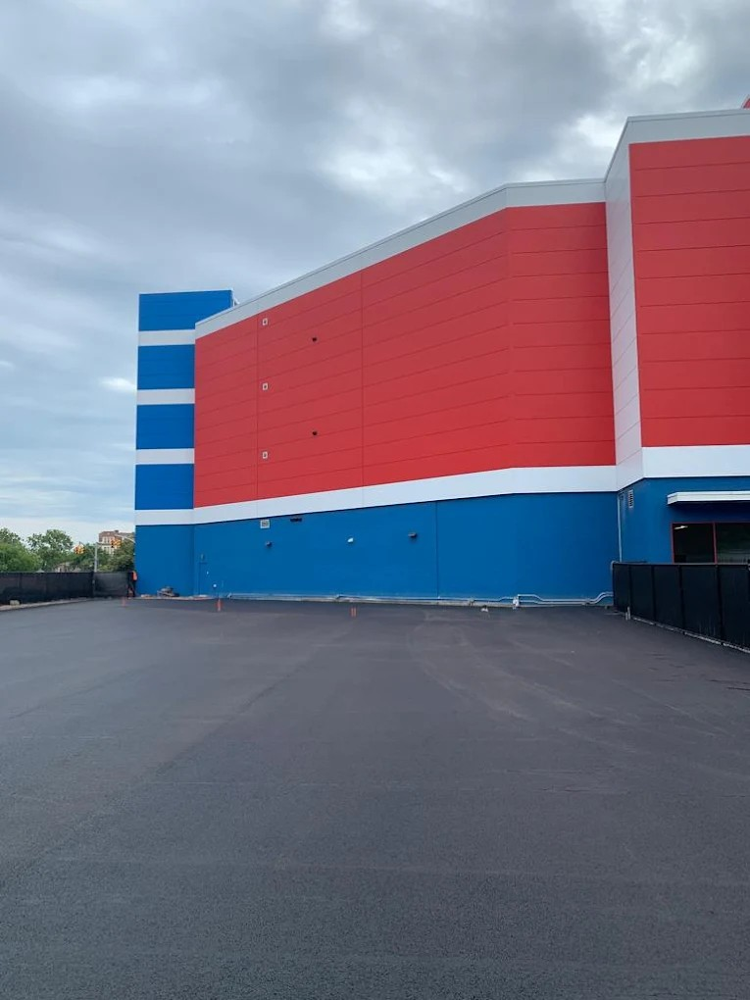
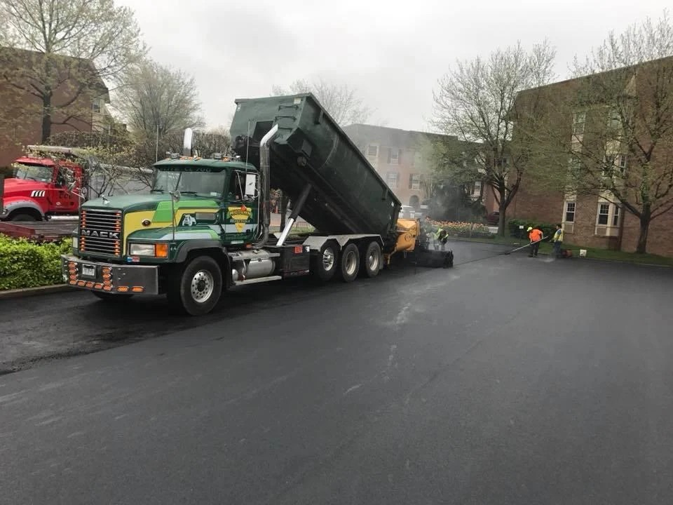
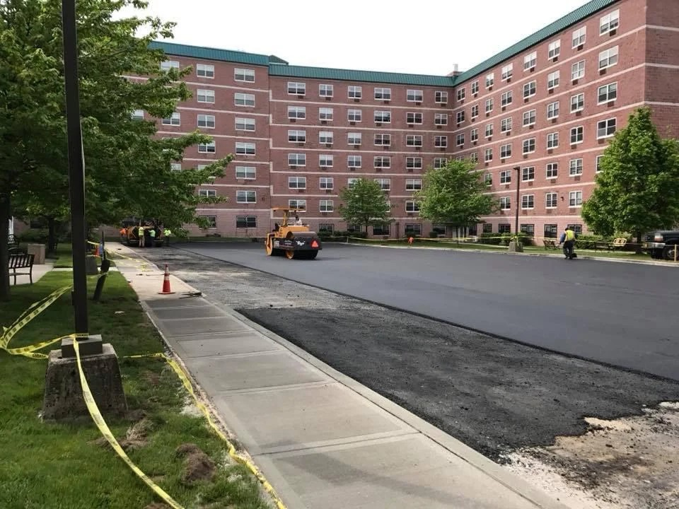

Serving the College Point community with excellence.
College Point's physical position on the Queens waterfront creates a set of asphalt deterioration conditions that differ meaningfully from inland neighborhoods. The peninsula sits surrounded on three sides by Flushing Bay and the East River, and the moisture that circulates through the soil and air accelerates the breakdown of pavement binders. In ZIP code 11356, property managers dealing with pothole-pocked parking lots, widespread alligator cracking, or failing surface drainage understand that these aren't purely seasonal inconveniences — they're signs of deeper structural issues that worsen with every rain event and temperature swing. A qualified paving contractor in College Point must understand the local hydrology, soil composition, and traffic patterns before recommending a repair approach.
Freeze-thaw cycles are the dominant destructive force in College Point's climate. Water infiltrates existing surface cracks in late autumn, freezes and expands during winter cold snaps, and forces those cracks wider with each cycle. By March and April, what began as hairline cracks in October may have become inch-wide fissures with significant structural compromise beneath them. Industrial properties near the College Point Corporate Park and along 20th Avenue face the added challenge of heavy truck loading, which accelerates base failure under already-compromised asphalt. Identifying the root cause — whether surface-origin cracking, base failure, or drainage inadequacy — determines which repair method actually solves the problem rather than masking it temporarily.
The landmarks of College Point form the backdrop for many of the neighborhood's paving challenges. The industrial corridors west of College Point Boulevard, the school facilities along 127th Street, and the commercial parking areas near the Poppenhusen Institute all carry different traffic profiles and loading requirements. Grey Ruso - Asphalt, Paving & Construction has worked on facilities throughout this zip code since 1987, observing how the specific orientation of a parking lot relative to prevailing drainage paths or truck movement patterns determines the severity and pattern of pavement distress. That longitudinal site knowledge shapes every diagnostic assessment the company performs.
Connectivity into College Point follows a limited set of arterials — the Whitestone Expressway approach, College Point Boulevard from the south, and 14th Avenue from adjacent Flushing. These same routes carry the delivery and logistics traffic that contributes to accelerated pavement wear in the northern sections of the neighborhood. Commercial property owners who rely on regular freight access need pavement systems engineered for that loading reality — heavier base depths, stiffer binder mixes, and reinforced edge structures that resist spreading under truck tires.
Grey Ruso - Asphalt, Paving & Construction has been solving asphalt problems for College Point and Queens County property owners since 1987. As a family-owned paving contractor with nearly four decades of local project history, the team applies a root-cause diagnostic process to every service call — not a one-size-fits-all repair that fails again in twelve months. Grey Ruso's commercial clients include schools, hospitals, and industrial complexes throughout the five boroughs and Long Island, all served from the company's base at 20-48 130th St in College Point. Grey Ruso at 20-48 130th St, College Point, NY 11356, or call 718-358-1836 today.

The pavement failures most frequently reported by College Point property owners fall into several distinct categories, each with a different origin and appropriate repair method. Alligator cracking — the interconnected web of fractures that resembles reptile scales — indicates fatigue failure driven by base weakness or chronic overloading. Linear cracking that follows joint lines typically reflects thermal stress and binder hardening. Potholes form when water infiltrates alligator-cracked zones, softens the base, and allows asphalt fragments to dislodge under traffic. Raveling, the gradual loss of surface aggregate, signals binder oxidation from UV exposure and water cycling. Edge cracking along lot perimeters suggests inadequate lateral support. Each diagnosis points to a specific intervention — from infrared patching and crack sealing for surface-origin issues to full-depth reclamation for base failures. Grey Ruso's asphalt paving contractor team determines the correct scope at no obligation. You can verify their project track record through Commercial paving company.
Surface crack sealing works well for isolated linear cracks with stable edges and a sound base beneath them. The process involves routing or sawing a uniform channel, cleaning debris, and applying hot-pour rubberized sealant that bonds to both crack faces. This extends surface life by two to four years per treatment when performed before water infiltrates. Alligator cracking is a different matter — crack sealing on a fatigued base provides only cosmetic improvement. The correct repair involves removing and replacing the full structural section: milling out the failed asphalt, recompacting or replacing the base aggregate, and laying a new binder and surface course. Grey Ruso's asphalt pavement repair teams carry equipment for both approaches, sizing the intervention to the actual damage depth rather than applying the cheapest option available. For independent review context, visit their Industrial asphalt paving listing.

College Point's low-lying areas near Flushing Bay experience stormwater backup that saturates pavement subgrades far beyond what inland Queens lots face during the same rain events. When water pools on or beneath a paved surface, it weakens the binding cohesion between asphalt layers and the base course. The resulting soft spots deform under even moderate vehicle loads. Drainage corrections — catch basin repairs, French drain installation, re-grading of lot slopes, and pavement crown restoration — address the water management problem directly. Without correcting drainage first, any new asphalt surface will repeat the same failure pattern. Grey Ruso's drainage systems team evaluates stormwater flow paths as part of every commercial paving assessment, ensuring that the structural investment in new asphalt is protected by adequate water management below and around it.
Properties along the northern waterfront corridors, industrial yards with daily heavy-truck traffic, and school or municipal facilities with dense daily use show the highest rates of accelerated pavement distress in the College Point and Whitestone areas. Whitestone properties face similar freeze-thaw exposure combined with higher residential traffic density on side streets. Learn about paving projects that increase commercial property value. Parking lots attached to commercial complexes along College Point Boulevard and 14th Avenue share exposure to long loading-dock approach lanes where rear-axle truck weight concentrates load at the pavement edge. Grey Ruso has worked on comparable facilities across Flushing, Bayside, and Murray Hill, giving the company comparative data on how similar base conditions behave under local climatic stress.
A straightforward asphalt pavement repair engagement with Grey Ruso begins with an on-site assessment, during which the estimator evaluates crack patterns, probes soft spots, reviews drainage flow, and documents existing pavement thickness. The written proposal identifies each repair zone by type and method, with costs broken out by section so clients can prioritize work within budget. Mobilization and material scheduling follow contract execution, with most commercial repair projects in the College Point area completed in one to three days once work begins. Weather holds are the primary variable — asphalt patching and resurfacing require temperatures above 50°F and a dry surface. Grey Ruso communicates scheduling in advance and minimizes business disruption by coordinating phased closures that keep most of a lot accessible during work. Grey Ruso — Ready to solve asphalt problems in College Point? Contact Grey Ruso - Asphalt, Paving & Construction at 718-358-1836.
Grey Ruso - Asphalt, Paving & Construction serves customers throughout College Point and Queens County, including Whitestone, Flushing, Bayside, Murray Hill, Malba, Long Island City, and the College Point Corporate Park district. Whether you're managing a Whitestone warehouse yard or a commercial parking facility near the Flushing waterfront, our asphalt paving contractor team brings the right equipment and expertise to your site. Service extends to Nassau County, Long Island, and Westchester for larger commercial and municipal engagements.
The answer depends on the extent of base failure. Surface-origin cracks and isolated potholes on a structurally sound base respond well to targeted repairs — crack sealing, infrared patching, or mill-and-overlay — at a fraction of full replacement cost. When alligator cracking covers more than 25–30% of a lot and probing reveals base softness beneath, full-depth replacement delivers better long-term value. Grey Ruso's assessment identifies the threshold honestly for every College Point property.
Late March through May is the optimal window for pavement assessments in College Point and the broader Queens area. Freeze-thaw damage becomes fully visible once temperatures stabilize above freezing. Early scheduling allows property owners to contract repairs before summer heat accelerates binder oxidation and crack widening. Grey Ruso recommends an annual spring walkthrough for all commercial properties with asphalt surfaces older than five years.
Yes — isolated linear cracks with stable edges and no underlying base weakness are excellent candidates for hot-pour crack sealing. The process extends pavement service life by preventing water infiltration and requires minimal downtime. Grey Ruso uses rubberized crack sealant applied after mechanical routing and cleaning, which improves adhesion and flexibility through seasonal temperature swings common in the College Point, NY climate.
Loading docks concentrate rear-axle truck weight at pavement edges, where lateral confinement is lowest. Repeated heavy loading fatigues the base layer, creating depressions that collect water. Water infiltration softens the subgrade, and surface asphalt fragments under continued loading to form potholes. The correct repair addresses base compaction first, then installs a properly thick structural section capable of supporting the design vehicle load — not just a cold-patch fill.
A properly designed and installed asphalt resurfacing in College Point should deliver 12 to 18 years of service life under typical commercial traffic. Factors that extend life include adequate base preparation, correct mix thickness, functional drainage, and a maintenance program that includes periodic crack sealing and seal coating. Grey Ruso's commercial clients across Queens County have seen consistent longevity results when all four conditions are met from installation.